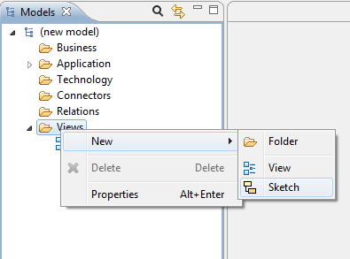
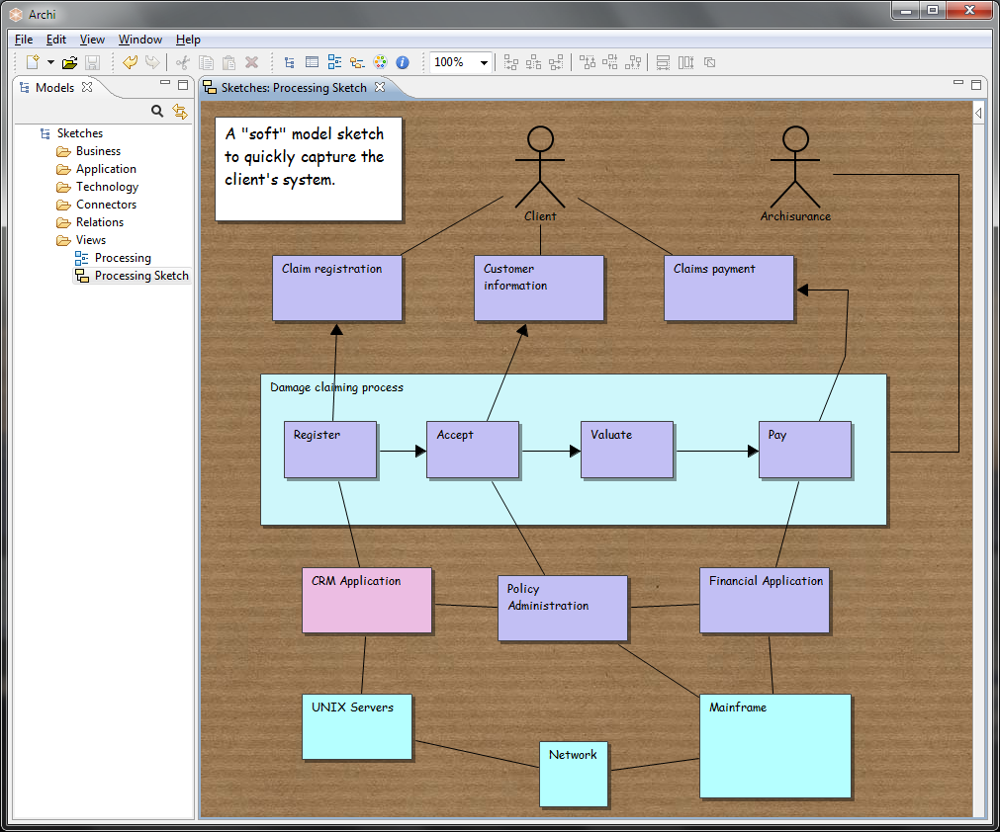

The Sketch View is an experimental feature of Archi. The idea behind the Sketch View is inspired by the ArchiMate specification document defining an “Introductory viewpoint”:
"The Introductory viewpoint forms a subset of the full ArchiMate language using a simplified notation. It is typically used at the start of a design trajectory, when not everything needs to be detailed yet, or to explain the essence of an architecture model to non-architects that require a simpler notation. Another use of this basic, less formal viewpoint is that it tries to avoid the impression that the architectural design is already fixed, an idea that may easily arise when using a more formal, highly structured or detailed visualization. We use a simplified notation for the concepts, and for the relations. All relations except "triggering" and "realization" are denoted by simple lines; "realization" has an arrow in the direction of the realized service; "triggering" is also represented by an arrow." - ArchiMate Specification 1.0 p.72
This is in some ways similar to Marc Lankhorst's description of modelling processes using conversation techniques whose aim is to capture the essence of the model:
"In architecture development, we find a number of common conversation techniques where it concerns the communication of architectural models:
- Brown-paper session: Structured brainstorm-like group session (up to about 15 people) in which items (keywords or short phrases) are elicited from the individuals in the group in answer to a question such as: 'What are the key functionality issues in our current IT architecture?' Typically, every individual item is written on a small adhesive note ('Post-It'). The items are then collected on a sheet of paper (traditionally of the cheap brown kind) and, by means of an open and creative group process, structured and categorised. This may involve adding, deleting, merging, or changing items. Usually, a mediator or facilitator is involved." - Marc Lankhorst et al. "Enterprise Architecture at Work", Second Edition, p.82
In Archi it is possible to create a "Sketch View". To add a new Sketch View to the model, right-click on the "Views" folder in the Model Tree and select "New->Sketch View" from the context menu:

Adding a new "Sketch" View
Once the Sketch View has been added to the model it can be opened from the tree by double-clicking on it. Any number of Views can be added to a model and be open at the same time. Views are arranged in tabs in the main area of the application window.

An example Sketch View
You can add new "Stickies" (Post-Its) to the View, an "Actor" figure and three types of connection. There are no rules as to what the relationships or stickies mean. All elements can be edited in the Properties Window. You are free to capture a sketch of your model and then later convert it into a fully constrained ArchiMate model and View.
Double-clicking a Sticky opens the Properties Window, clicking on a selected Sticky allows you to directly edit the Sticky's text.
It is possible to remove the background paper effect in Preferences if you wish.
Later versions of this feature will allow you to: